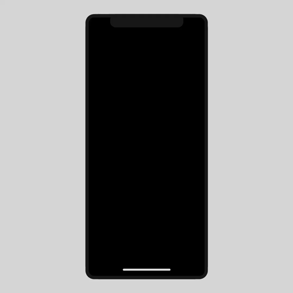

30 Days of UI Interactions
A daily challenge where I designed and animated UI interactions.
A daily challenge where I designed and animated UI interactions.

I took on a 30 day design project in order to hone my skills in interaction
design and prototyping. The software I used were: Adobe Illustrator, XD and After Effects.
I researched various UI interactions to see what kind of animations I was
interested in and what I felt I could accomplish within my schedule without going insane. After the
research process, I compiled a list of themes I wanted to do for each 10 day intervals.
I began sketching out how I wanted each animation to be. If I had time, I would plan out future
animation ideas ahead of time, otherwise I would do the planning process the day of each animation.
• Learn animation skills on After Effects.
• Gain a more in-depth understanding of UI interactions.
• Gain a faster workflow.
• Budgeting my time with 5 classes and an internship.
• Uploading my work before midnight.
• Limit myself to 2-3 hours of work time.
• Burning out (which I did on several occasions. #rip)
